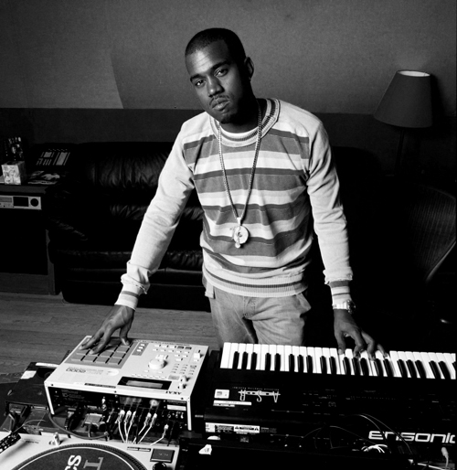
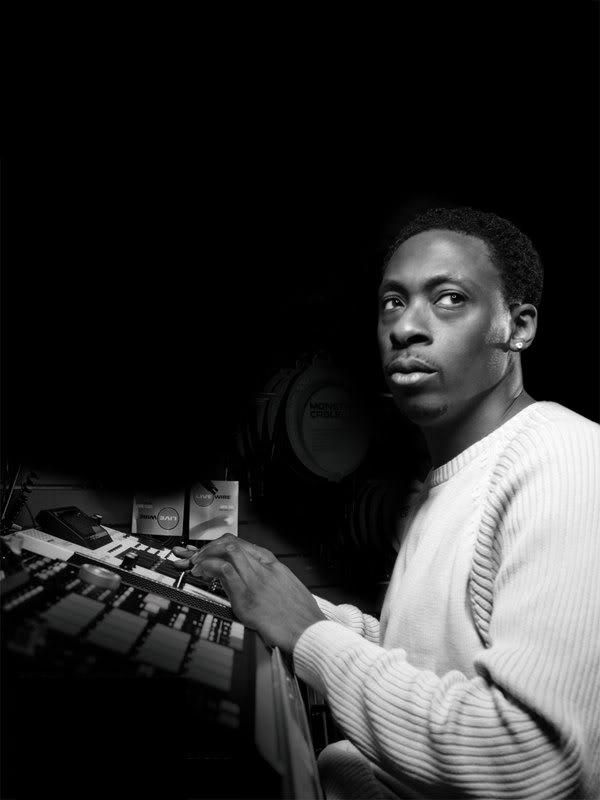
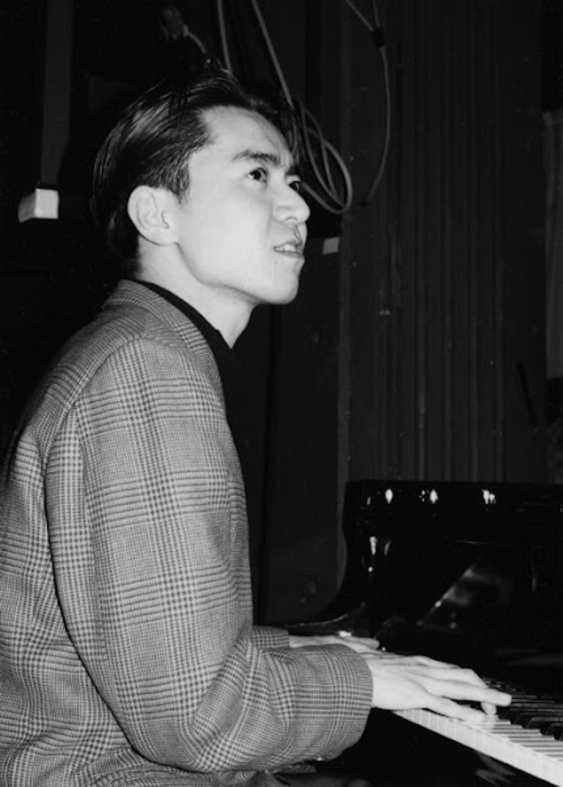

I am currently attending Le Wagon’s Full-Stack Web Development bootcamp in Tokyo learning Ruby, Ruby on Rails, JavaScript, HTML5, CSS3, JQuery, Bootstrap, SQL and PostgreSQL. I am seeking opportunities in Japan to jump start my career as a developer.
NujabesNujabes was a Japanese record producer, DJ, composer and arranger who produced atmospheric instrumental mixes sampling from hip hop and jazz and released three solo studio albums: Metaphorical Music (2003), Modal Soul (2005) and Spiritual State (released posthumously in 2011). |
|
|  |
Kanye WestKanye West is an American rapper, singer, songwriter, record producer, entrepreneur and fashion designer. His musical career has been marked by dramatic changes in styles, incorporating an eclectic range of influences including soul, baroque pop, electro, indie rock, synth-pop, industrial and gospel. |
|  |
Pete RockPete Rock is an American record producer, DJ and rapper. He rose to prominence in the early 1990s as one half of the critically acclaimed group Pete Rock & CL Smooth. |
|  |
Hideki NaganumaHideki Naganuma is a Japanese composer, DJ and remixer who primarily does work for video game soundtracks. Naganuma is most well known for his original compositions used in the Dreamcast game Jet Set Radio (Jet Grind Radio in North America). |